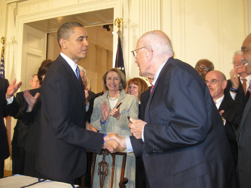

Now you might be saying to yourself, "Legislative leader? I thought the president was part of the executive branch.” You wouldn’t be wrong. While the president is most assuredly part of the executive branch, they do have considerable influence on the creation and passage of legislation. Only members of Congress can introduce and ultimately pass a bill, but anyone can write a bill and advocate for its passage.
The president can be seen as a legislative leader in that they can take the lead in legislative goals, especially if they have support in Congress. In 2009, President Obama took the lead in getting the healthcare law known as the Affordable Care Act passed through Congress. The budget process also allows the president to set the tone for budget negotiations.

The president may also influence the agenda by directly gaining the public’s support. If a president is popular enough with the people of the United States, they can use that popularity to sway lawmakers to his viewpoint on potential legislation.
The president has the power to veto or refuse to sign legislation passed by Congress into law. Just the threat of a veto alone can give the president negotiation power in legislative outcomes. A presidential veto can be overridden by Congress with a two-thirds vote in both houses. Needless to say, the overriding of a veto is rare.